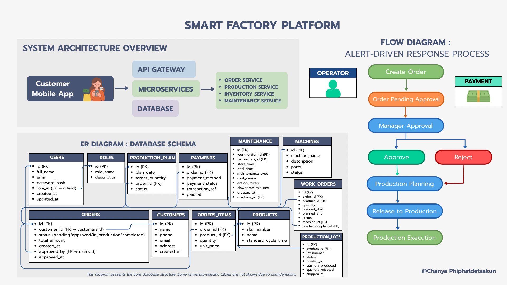
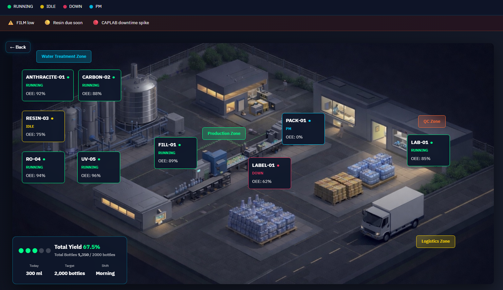

2026
Data Engineering
Power BI
Smart Factory Operations System
A full-stack production analytics platform built for small-to-medium beverage manufacturing facilities. The system centralizes production, quality, and maintenance data into a unified data model, eliminating fragmented tracking and delayed KPI reporting while enabling real-time OEE monitoring. Architected using a static-first frontend evolving into a serverless backend, applying progressive enhancement, RBAC, and API-first design principles.

Business Problem
Operational Challenges
- Paper-based tracking
- No real-time visibility
- Inconsistent quality control
- Reactive maintenance
- Manual production planning
- Unstructured order management
Case Study Scope
- On-site factory observation
- End-to-end water production analysis
- Role-based operations system design
- Preventive maintenance modeling
- OEE & downtime tracking logic
- Lean & Industrial Engineering application
Solution Architecture
Phase 1 – Static Prototype
- LocalStorage-based proof-of-concept
- Rapid stakeholder iteration
- No server infrastructure
Phase 2 – Backend Migration
- Supabase PostgreSQL
- Row Level Security (RLS)
- Edge Functions for KPI logic
- Frontend-backend separation
Design Principles
- Tablet-first operator UI
- Offline-capable fallback
- Role-based interface
- Thai-language primary UI
- Dark theme for 24/7 operations

